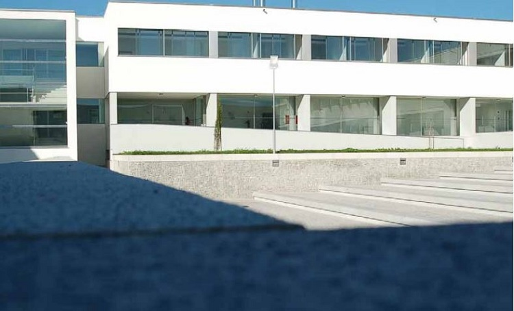

Erasmus in Covilha
Erasmus in CovilhaFaculty of Social and Human Sciences
A strong conscience for the needs of a medicine faculty brings the development from the fi elds of Health led to the creation of a governmental approval for two additional medical schools in country, one of them located in Covilhã. It remained, however, immediately established that the candidate projects would have to make major changes in the medicinal curriculum, thus enabling renew the teaching of medicine in Portugal. Under that provision, the University of Beira Interior embarked on another challenge and submitted an application for innovation project of Medicine Degree, a project which was approved by the Council of Ministers Resolution No. 140/98 of 4th December. It sought to develop innovative models of training, guided by scientifi c standards, educational and high quality care, which also links with units to provide health care that would be ensured by a different and innovative organizational model
Based on the assumptions set out, were outlined three guidelines for the teaching methodology to put in practice in the Faculty of Health Sciences: the creation of a pedagogical model to replace the system of “traditional” teaching, with the inclusion of additional courses by a system of integrated teaching, based on setting targets and using, wherever possible, to problem-based learning; emphasis on learning from students side, in detriment of the processes leading to the “storage” of information. Thus, the binomial “teaching-learning” is essential to put emphasis on learning by understanding teaching as a system to facilitate it; continued control of teaching methodology. The Faculty of Health Sciences includes an R & D unit, the Centre for Research in Health Sciences, which develops projects in mobile communications and biotechnology, approved and fi nanced by FCT.